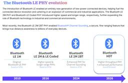

直近1週間の人気フィード
はてなブックマーク数を元に新着優先で並べ替え

Linuxの脆弱性948件を攻略、セキュリティ特化AI「GPT-6 Cyber」 21 PC Watch
21 PC Watch
オープンソースOSの中核「Linuxカーネル」で、実際に攻撃が成立する脆弱性が948件見つかった。見つけたのは、OpenAIが11月5日(現地時間)に発表したセキュリティ研究向けのAIモデル「GPT-6 Cyber」だ。ただし、このAIは誰でも使えるわけではない。
1日前

Bluetooth LEが7.5MbpsでClassic超え、新物理層「HDT」採択 10 PC Watch
省電力が売りのBluetooth LEが、速度でも本家を上回ることが正式に決まった。Bluetooth SIGは11月4日(米国時間)、Bluetooth LE向けの新たな物理層(PHY)「Bluetooth High Data Throughput(HDT)」を採択したと発表した。HDTは7月にドラフト仕様が公開されていたもので、「Bluetooth Core 7.0」にオプション機能として含まれる。
2日前
「そこだけ直して」で動画編集可。動画生成AI「Gemini Omni 1.2 Flash」登場 3 PC Watch
生成した動画の気に入らない部分を、「背景を差し替えて」といった会話の指示だけで編集できる動画生成AIが登場した。Googleが11月6日(日本時間)に発表した「Gemini Omni 1.2 Flash」だ。生成できる動画の長さは従来の10秒から15秒に延び、API料金は前バージョンより30%下がった。「Google AI」プラン加入者にも順次提供が開始されたが、Geminiアプリでの15秒動画の生成はUltraプランに限られる。
1日前